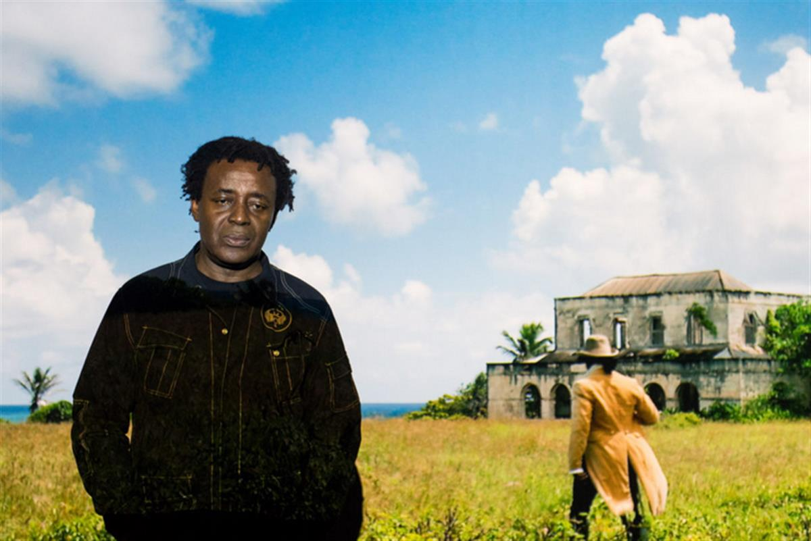

Auto Da Fé(2016)
British Artist John Akomfrah Wins $50,000 Artes Mundi Prize
His work, tackling migration, racism, and religious persecution, feels particularly urgent.

John Akomfrah has been announced as the winner of the Artes Mundi 7 award, which comes with a £40,000 ($50,000) cash prize. The British artist was pronounced winner of the prestigious biennial award during a ceremony held on January 26 at the National Museum Cardiff.
Artes Mundi 7 is the UK’s largest contemporary art prize and is open to artists whose work explores social issues which relate to the theme of “The Human Condition.”
Akomfrah—whose work explores global diaspora, history, memory, colonialism, and its legacy mainly through lens-based media—triumphed over fellow nominees Neïl Beloufa, Nástio Mosquito, Lamia Joreige, Bedwyr Williams, and Amy Franceschini/Futurefarmers.
“I am absolutely touched by this and enormously grateful for the chance it offers to finally finish off something I have been planning for over a decade. Over the years, Artes Mundi has chosen some very brilliant artists for this award: all were important artists doing challenging and engaged work, and to join that group is a huge honor and responsibility,” said Akomfrah of winning the prize.
The jury, chaired by ArtReview’s Oliver Basciano, was made up of prominent figures from the art world, including Ann Jones, curator of the Arts Council Collection; the artist Phil Collins; and the curators Carolyn Christov-Bakargiev, Elvira Dyangani Ose, and Nick Aikens.
“The judges felt that all the shortlisted artists showed outstanding work. However, the prize is awarded not just for the work in the exhibition but for the continued excellence of their practice over the past 8 years. The Artes Mundi 7 Prize was awarded for Akomfrah’s presentation of Auto Da Féand for a substantial body of outstanding work dealing with issues of migration, racism, and religious persecution. To speak of these things in this particular moment feels more important than ever,” Karen Mackinnon, director of the Cardiff-based organization Artes Mundi, said.
Akomfrah’s Auto Da Fé(2016) is on view, along the other shortlisted works, at the National Museum Cardiff through February 26.
The film brings together eight examples of mass migrations that have taken place during the past 400 years, beginning with the 1654 fleeing of Sephardic Jews from Catholic Brazil to Barbados, and continuing with present day cases like the migrations from Hombori, Mali, and Mosul in Iraq. But far from adopting a documentary style, the artist employs the aesthetics of a period drama, complete with sumptuous costumes, locations, and sets.
Akomfrah’s previous work Vertigo Sea(2015) was one of the highlights of the group exhibition of the 2015 Venice Biennale, curated by Okwui Enwezor.
SOURCE: ARTNET NEWS
REFERENCE: ARTES MUNDI